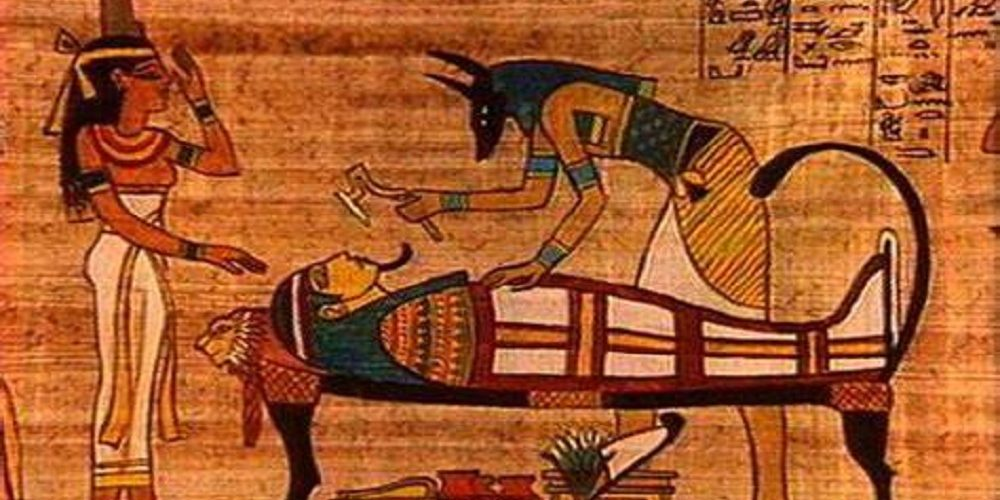
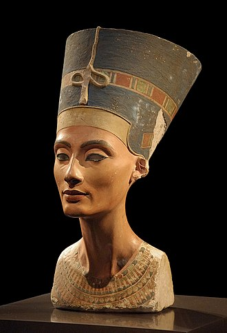
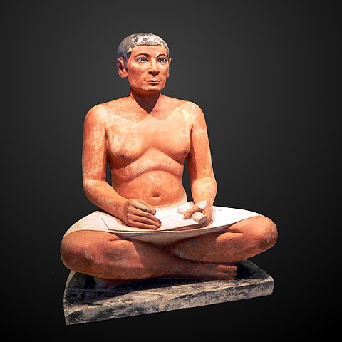
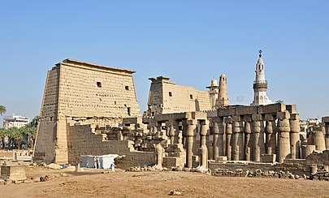
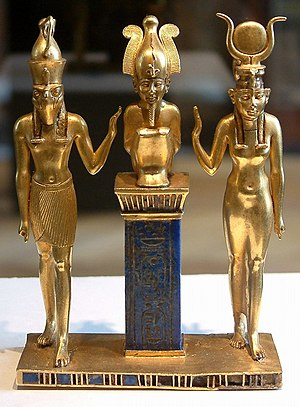

La mitología egipcia comprende el estudio de creencias sustentadas en la religión del Antiguo Egipto desde la época predinástica hasta la imposición del cristianismo, cuando sus prácticas fueron prohibidas en tiempos de Justiniano I, en el año 535.
Su desarrollo e influencia perduraron más de tres mil años, variando lógicamente a través del tiempo; por lo tanto, un artículo o incluso un libro, solo puede resumir la multitud de entidades y temas de este sistema complejo de creencias. La variada iconografía egipcia es muy diferente de la griega o romana: en la mitología egipcia muchas deidades son representadas con cuerpo humano, y cabezas de otros animales
Los egipcios entendieron que la existencia humana era solo un pequeño segmento de un viaje eterno presidido y orquestado por fuerzas sobrenaturales en las formas de las muchas deidades que componían el panteón egipcio. De acuerdo con el historiador Bunson,
| DEIDADES | SERES | LUGARES |
|---|---|---|
| Ra | Esfinge | Templos |
| Amón | Grifo | |
| Isis | Ammyt | |
| Horus | ||
| Osiris | ||
| Anubis | ||
| Maat | ||
| Thot | ||
| Ptah |
La creencia inicial en la inmortalidad de dioses y faraones, posteriormente extendida al resto de los egipcios, significó que se practicara el embalsamamiento y la momificación, para poder preservar la integridad del individuo en la vida futura, según los textos de la mitología egipcia. Además ellos creían que si a alguna persona le faltaba alguna parte de su cuerpo no iría a la otra vida
Los antiguos egipcios consideraban que el espíritu humano estaba conformado por el Ba, el Ka y el Aj. Los egipcios creían que el espíritu de los difuntos era conducido por Anubis hacia el lugar del juicio, en la "sala de las dos verdades", y el corazón del muerto, que era el símbolo de la moralidad del difunto, se pesaba, en una balanza, contra una pluma que representaba el Maat, el concepto de verdad, armonía y orden universal. Si el resultado era favorable, el difunto es llevado ante Osiris en Aaru, sin embargo, Ammit, "el devorador de corazones", que se representaba como un ser mezcla de cocodrilo, león e hipopótamo, destruía aquellos corazones cuya sentencia resultaba negativa, impidiendo su inmortalidad.
El Libro de los Muertos era una serie de 190 fórmulas mágicas, adaptadas a las circunstancias particulares de cada individuo, las cuales eran depositadas junto al difunto, o grabadas en los muros de la tumba para facilitar su viaje por la Duat; también contenía las palabras adecuadas a utilizar en su juicio: las palabras justas. Uno de los mejores ejemplos del Libro de los Muertos es el Papiro de Ani, creado alrededor de 1240 a. C., que además de textos contiene muchas imágenes de Ani y de su esposa en su viaje a través del mundo de los muertos.
Los 42 jueces de la Duat son: Ahí, Am Khaibit, An Af, An Hetep ef, Arfi Em Khet, Ari Em Abef, Basty, Desem Besek, Desem Snef, Fenti, Hept Khet, Heref Haf, Her Uru, Hetch Abhu, Kenemti, Khemiu, Maa Antuf, Neb Abui, Neb Heru, Neb Maat, Neba, Nefertum, Neha Her, Nehebkau, Neheb Nefert, Nekhenu, Qerrti, Ruruti, Sekhriu, Sera Kheru, Sertiu, Set Qesu, Shet Kheru, Ta Retiu, Tcheser Tep, Tem Sepu, Tenemiu, Tutu, Uamenti, Uatch Rekhit, Usekh Nemmt y Utu Nesert.
El arte es fundamental en cualquier civilización. En el momento que las más elementales necesidades humanas se han cubierto tales como, comida, vivienda, leyes y religión, los habitantes empiezan a producir arte, la mayoría de las veces, estos dos acontecimientos florecen casi al mismo tiempo. En Egipto, este proceso comenzó en el Período Predinástico (ca. 6000 - ca. 3150 a.C.), por medio de imágenes de humanos, animales y figuras divinas grabadas en roca. Estas primeras figuras eran rústicas en comparación con la evolución que más tarde habría, sin embargo, conservan una característica importante de la cultura egipcia: el equilibrio.
La sociedad egipcia se apoyó en el concepto de armonía conocida como ma'at, la cual surgió desde su creación y se sustenta en el universo. Todo el arte egipcio se asienta en un equilibrio perfecto y refleja el mundo ideal de los dioses. De la misma forma, que los dioses proporcionaban toda clase de regalos a la humanidad, el arte egipcio se imaginó y se creó para su uso. Esta práctica egipcia fue desde el principio y en primer lugar funcional. No importaba que tan bella estuviera tallada una estatua; su propósito principal era servir como refugio para un espíritu o un dios. Quizá un amuleto se diseñó para ser atractivo, pero su belleza estética no era la fuerza creadora, sino la protección. La pintura en tumbas, escenas caseras en templos y jardines palaciegos se crearon, en muchos casos, para proporcionar una función muy importante la cual era un recordatorio de la condición eterna de la vida, el valor de la estabilidad personal y de la comunidad.El busto de Nefertiti es un busto de piedra caliza con estuco pintado que corresponde a Nefertiti, la gran esposa real del faraón egipcio Akenatón. Se cree que Tutmose lo realizó en 1345 a. C. debido a que se encontró en su taller en Amarna, Egipto. Es una de las obras más copiadas del Antiguo Egipto. Nefertiti se ha convertido en una de las mujeres más famosas del mundo antiguo y en un icono de la belleza femenina.
Se ha convertido en un símbolo cultural de Berlín y del antiguo Egipto. También ha sido objeto de una intensa discusión entre Egipto y Alemania sobre las demandas egipcias para su repatriación, que comenzó en 1925 una vez que el busto se mostró por primera vez al público. A los inspectores egipcios no se les mostró el busto real antes de que lo dejaran salir del país.
El escriba sentado, también conocido como El escriba sentado del Louvre, es una de las estatuas más representativas de la escultura del Imperio Antiguo de Egipto, y una de las más famosas y bien conservadas de toda la Civilización egipcia. Fue esculpida entre los años 2480 y 2350 a. C.
Se realizó en una época en que Egipto se encontraba en la cima de su gloria: los artesanos cubrían más campos, las tumbas y los templos tenían una arquitectura más compleja y el arte se ocupaba de objetos más pequeños, reproduciendo la vida cotidiana. Los escribas, indispensables en el Estado fuertemente centralizado, eran representados frecuentemente.
El templo de Luxor, situado en el corazón de la antigua Tebas, fue construido esencialmente bajo las dinastías XVIII y XIX egipcias. Estaba consagrado al dios Amón bajo sus dos aspectos de Amón-Ra (Ra, era considerado el dios del cielo, dios del Sol y del origen de la vida en la mitología egipcia). Las partes más antiguas actualmente visibles remontan a Amenhotep III y a Ramsés II. Seguidamente, nuevos elementos fueron añadidos por Shabako, Nectanebo I y la dinastía ptolemaica.
En época romana, el templo fue parcialmente transformado en campo militar. El edificio, uno de los mejores conservados del Nuevo Imperio egipcio, aún mantiene numerosas estructuras. Además del gran pilono, el visitante puede también atravesar dos grandes peristilos y la columnata monumental que enlaza estos dos patios. El santuario propiamente dicho, residencia del Amón de Opet, al igual que las salas que conservan una gran parte de sus baldosas.
Forma parte del conjunto denominado Antigua Tebas con sus necrópolis, declarado Patrimonio de la Humanidad por la Unesco en 1979.
La tríada de Osorkon II es una joya elaborada por los orfebres egipcios en la Dinastía XXII que transcurrió de c. 945 a 715 a.C., en el tercer periodo intermedio de Egipto y que fue una de las dos dinastías de origen libio junto con la dinastía XXIII.
Las tres figuras de la pieza representan a los dioses de la mitología egipcia: Osiris (dios de la resurrección), Isis (Diosa de la maternidad y del nacimiento), y Horus ("el elevado", Dios celeste), llamada tríada osiríaca.
La joya tiene grabado el nombre de Usermaatra Setepenamón Osorkon, u Osorkon II, faraón de la dinastía XXII de Egipto; reinó de 874 a 850 a.C. (Cronología según Grimal, Arnold y Shaw), durante el Tercer periodo intermedio de Egipto. La figura se exhibe de forma permanente en el Museo del Louvre, (París), después de ser adquirida en 1872.
